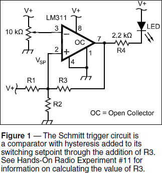
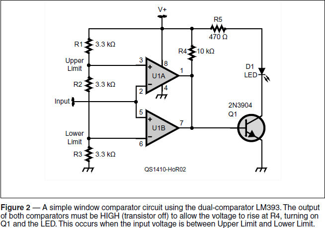
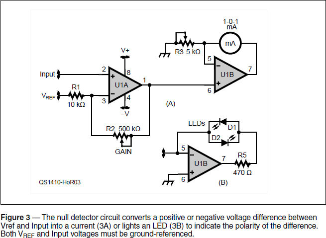

Experiment #141 — Window Comparators and Null Detectors
In the early days of Hands-On Radio, one of the first experiments (#11) described comparator circuits.1 These are pretty handy for detecting when the voltage at one of their inputs is greater or less than at the other input. I’m finally getting around to describing two variations of the comparator — the window comparator and the null detector. There are plenty of applications for these circuits in radio and for test circuits.
The Window Comparator
Figure 1 shows a comparator circuit that incorporates hysteresis to shift the setpoint “a little bit” when the output changes state. That helps prevent “chatter” — rapid on-off switching of the output due to noise on the input signal or voltage reference. This comparator-with-hysteresis is known as a Schmitt trigger. Schmitt triggers are so useful that logic ICs intended for interfacing to switch and analog signals use them at gate inputs. Typical parts are the CD4093 and CD40106, along with variations of the 7414.

The comparator provides information about a single level — is the input voltage higher or lower than the setpoint? It is often more useful to know if an input voltage is between an upper and lower limit. This type of comparator is a window comparator, sometimes called a range detector.
The window comparator in Figure 2 is simply a pair of comparator circuits — one detects whether the input is below the lower limit and the other detects when it is higher than the upper limit. Hysteresis is not included in order to keep the circuit simple. (Power and ground for the LM393 are on Pins 8 and 4 in the DIP and SOIC packages.)

The comparator setpoint voltages (labeled Upper Limit and Lower Limit) are easy to calculate: Upper Limit = V+ × (R2+R3)/(R1+R2+R3) = 2/3 V+ and Lower Limit = 1⁄3 V+. If V+ is 12 V, then the two limits are 8 V and 4 V, creating a 4 V window from 4 to 8 V.
Remember that the output of the comparator is an open-collector transistor acting as a switch that can be open or closed. By connecting the output to a pull-up resistor (R4 in Figure 2) the output voltage is HIGH when the transistor is off (approximately V+) and LOW (at the transistor’s collector-emitter saturation voltage) when the transistor is on. When the comparator’s non-inverting (+) input is at a higher voltage than the non-inverting (–) input, the output is HIGH. When the opposite is true (non-inverting input lower than the inverting input) then the open-collector transistor output is LOW.
Connecting both comparator outputs together creates a wired-AND gate in which both output transistors must be HIGH to allow the voltage at R4 to rise and turn on Q1, lighting the LED. If either comparator output is LOW, Q1 remains off. For the window comparator, if the input voltage is higher than Upper Limit, the output of U1A is LOW and Q1 is off. If the input voltage is lower than Lower Limit, the output of U1B is LOW and Q1 is off. The only condition in which both comparator outputs are HIGH occurs when the input voltage is between Upper Limit and Lower Limit.
Look In the Window
Build the circuit, using either a variable power supply or adjustable resistor to create the input voltage. Vary the input voltage from below 4 V to above 8 V, while watching the LED. It will turn on when the input voltage is in the target window.
Now experiment with the value of R2 by substituting fixed-value resistors or using an adjustable resistor. What happens to the window range as R2 is increased? (The window range increases.) Why? (A higher value for R2 lowers Lower Limit and increases Upper Limit.) Decrease R2 and verify that the opposite effect occurs. Return R2 to 3.3 kΩ and increase the value of R3 — what happens to the window? (The window shifts higher.) Return R3 to 3.3 kΩ and increase the value of R1 to observe the effect on the window. (It shifts lower.)
If you used a different voltage for V+ the values of Upper Limit and Lower Limit would change right along with it. What if there was noise on the power supply output? Or if you were using a battery supply — what would happen as the battery discharged? Obviously, it’s not a good idea to use an unregulated voltage source for your setpoints. Some kind of regulated voltage is necessary. (Note that if you use a bipolar supply with Pin 4 of U1 and the negative end of R3 connected to the negative supply voltage, the window limits can be made positive or negative.)
This is such a common circuit that many manufacturers offer single and dual comparator ICs with a voltage reference built in. One such IC is the Linear Technology LTC1442.2 You can also use a Zener diode or voltage reference IC. Regardless, for consistent and reliable operation, the voltage source to which the voltage divider string of R1, R2, and R3 must be clean and stable. It is good practice, particularly around RF sources like transmitters, to include small-value capacitors (such as 0.01 µF) from each setpoint to ground.
Window comparators are useful for lots of radio-related chores: making sure your power supply or battery voltage is in the right range, for example. If you sample some RF power and use a peak detector as described in the previous column, a window comparator can be used to make sure the power is within a desired range. Another use is for decoding the Icom transceiver BAND data output that changes from 0 to 7 V with the band selected. K6XX has designed a circuit that uses an LED meter driver IC with many window comparators built in to sort the voltage levels into digital-compatible outputs.3
Null Detector
There are many instances in which it’s useful to adjust a circuit or system to produce a voltage exactly equal to some reference level, such as when balancing a bridge circuit or trying to adjust dc offset in an amplifier or demodulator circuit. A special type of window detector called a null detector responds to a narrow range right around a 0 V difference between its two inputs. “Null” in this case means “no difference between” the voltage being measured and a reference voltage.
Figure 3A shows a null detector circuit that uses an analog center-zero meter to allow fine adjustments to obtain the null. The input section consisting of U1A, R1, and R2 sets the gain of the detector equal to R2 / R1. The higher the gain, the more sensitive the detector. Note that U1 is a dual op-amp and not a dual comparator! A bipolar power supply of at least ±6V should be used.

U1B converts the voltage at the non-inverting input into current through the meter. R3 calibrates the voltage-to-current ratio: I = V / R3. If R3 is 1kΩ, then 1 V at the non-inverting input to U1B is converted to 1 mA of current through the meter. (1-0-1 mA center-zero meters are often used with a shunt for battery charging systems.)
To calibrate the meter; set R2 to 10 kΩ so that gain equals 1, ground Vref, then connect a voltage of 0 to 1 V to the input. Measure the voltage at the output of U1A and adjust R2 so that the meter shows the same number of mA. i.e. – for a voltage of +0.5 V, the meter should indicate 0.5 mA in the positive direction.
To use the null detector, connect Vref to the reference voltage desired, whether 0 V or some other value, and adjust input gain (R2) to the desired sensitivity. For initial adjustments of the external circuit being measured, keep gain low. As the null is reached, increase input gain for more and more sensitive adjustments.
An alternative to the analog meter is shown in Figure 3B, a pair of LEDs connected back-to-back. The calibration pot, R3, is adjusted with Vref and Input shorted so that both LEDs are dark. (Noise, hum, or ripple on either signal may cause the LEDs to light dimly. A 0.1 µF capacitor across R2 creates a low-pass filter to avoid responding to ac components.) If the input voltage is higher than Vref, then the bottom LED will be dark and the top LED will be lit. This is often sufficient to adjust a circuit or balance a bridge without requiring a high-precision display.
Parts List
LM393 dual comparator (or equivalent)
TL082 dual op-amp (or equivalent)
2N3904 NPN transistor
Standard LED (2)
470 Ω, 3.3 kΩ (3 ea.), 10 kΩ (2 ea.) ¼-watt, 5% resistors
5 kΩ, 10 kΩ trimpot
1-0-1 mA center-zero dc milliammeter (optional)
1All previous Hands-On Radio experiments are available to ARRL members at www.arrl.org/hands-on-radio.